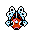
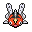

Pokédex / #119

Seaking #119
Water
The horn on its head is sharp like a drill. It bores a hole in a boulder to make its nest.
Generation 1 · Kanto

Stats
| Attack | 92 | |
|---|---|---|
| Defense | 65 | |
| Sp. Atk | 65 | |
| Sp. Def | 80 |
In the wild
| Wild level | 25–35 |
|---|---|
| HP | 80 |
| Experience | 10 |
| Egg groups | Water 2 |
Evolution
- Evolves from Goldeen at level 35.
Moves
| Level | Move | Type | Category | Power | Energy | Cooldown | Effect | |
|---|---|---|---|---|---|---|---|---|
| 1 | Tackle | Normal | Physical | 15 | 15 | 1s | Tackle is one of the most common and basic moves a Pokemon learns. It deals damage with no additional effects. | |
| 5 | Peck | Flying | Physical | 35 | 35 | 6s | Peck inflicts damage and has no secondary effect. | |
| 10 | Bubble | Water | Special | 10 | 40 | 3s | Bubble deals damage and has a 10% chance of lowering the target's Speed by one stage. | |
| 15 | Horn Attack | Normal | Physical | 65 | 70 | 10s | Horn Attack deals damage and has no secondary effect. | |
| 20 | Water Pulse | Water | Special | 60 | 65 | 9s | Water Pulse deals damage and has a 20% chance of confusing the target. | |
| 25 | Water Gun | Water | Special | 40 | 45 | 9s | Water Gun inflicts damage and has no secondary effect. | |
| 30 | Aqua Ring | Water | Status | – | 100 | 120s | The user surrounds itself with a veil of water, allowing it to restore 1/16 of its max HP at the end of every turn during 16 turns. | |
| 40 | Drill Run | Ground | Physical | 27 | 80 | 15s | Drill Run deals damage and has an increased critical hit ratio. | |
| 45 | Supersonic | Normal | Status | – | 20 | 14s | Supersonic causes the target to become confused. | |
| 50 | Poison Jab | Poison | Physical | 80 | 80 | 12s | Poison Jab inflicts damage and has a 30% chance of poisoning the target. | |
| 55 | Horn Drill | Normal | Physical | 110 | 110 | 17s | Horn Drill deals damage and has no secondary effect. | |
| 60 | Agility | Normal | Status | – | 80 | 20s | Agility raises the user's Speed by two stages. | |
| 65 | Scald | Water | Special | 80 | 90 | 19s | The user shoots boiling hot water at its target. This may also leave the target with a burn. | |
| 70 | Megahorn | Bug | Physical | 120 | 120 | 18s | Megahorn deals damage and has no secondary effect. |
Field abilities
WaterfallSurfDive
Special abilities
Swift SwimWater Veil
Egg moves
Aqua TailBody SlamHazeHydro PumpMud ShotMud SportMud-SlapPsybeamSignal BeamSkull BashSleep Talk
Technical machines
BideBlizzardBubblebeamDouble EdgeDouble TeamHailHyper BeamIce BeamIcy WindMimicPoison JabRageRain DanceRestSkull BashSubstituteSwiftTake DownToxicWater GunWater Pulse
Drops
| Item | Amount | Chance | |
|---|---|---|---|
| water gem | 1–7 | 100% | |
| horn | 1 | 33.3% | |
| water pendant | 1 | 31.2% | |
| pot of water | 1 | 20% | |
| cutting fang | 1 | 10% | |
 | seaking doll | 1 | 0.1% |
| Splash Plate | 1 | 0.05% | |
| held mystic water | 1 | 0.02% |